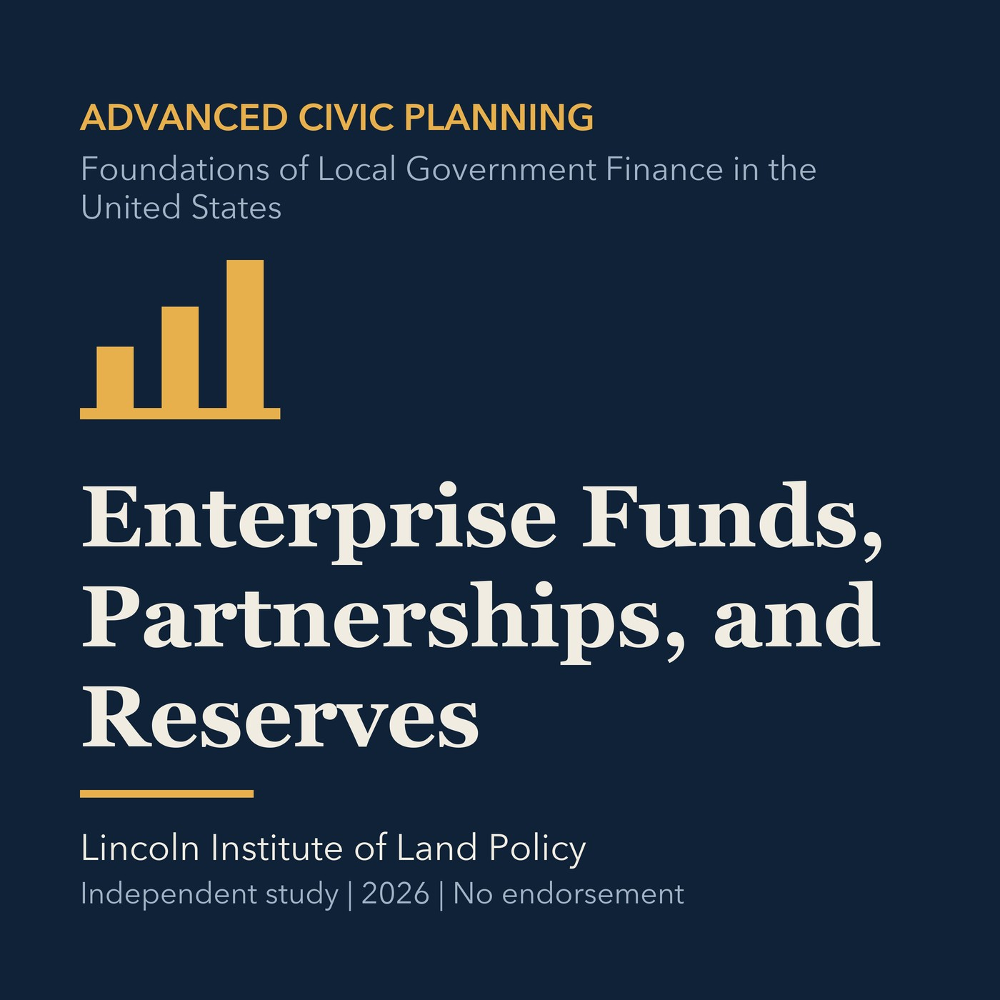

EPISODE 35
Enterprise Funds, Partnerships, and Reserves
Evaluates restricted funds, partnerships, reserves, and risk allocation in municipal finance.

- Stable GUID
acc87728-2f2b-512c-a4eb-f5c0e041b296- Release
- advanced-civic-planning-v2026.2
- SHA-256
2caf6a917e6fb095d9dbc56f5417dce46504c79736fbade633414cde4c13a644